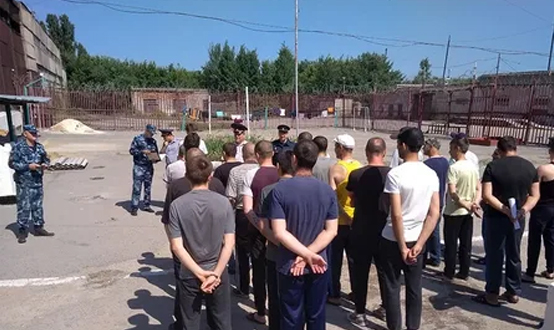
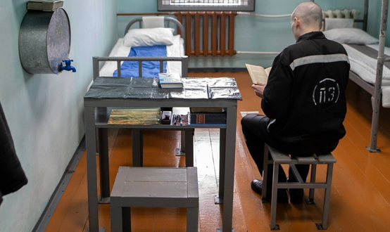

Лишение свободы на определенный срок
ЦИТАТА
Лишение свободы на определенный срок (ст. 56 УК РФ) – это изоляция осужденного от общества путем направления его в исправительное учреждение на определенный срок.
Признаки данного вида наказания:
а) состоит в изоляции осужденного от общества;
б) долгосрочность (срок лишения свободы – от двух месяцев до двадцати лет);
в) реализуется посредством помещение осужденного в учреждение уголовно-исправительной системы.
Сроки лишения свободы:
а) общий – от двух месяцев до двадцати лет;
б) специальный:
- при частичном или полном сложении сроков лишения свободы при назначении наказаний по совокупности преступлений – до двадцати пяти лет, по совокупности приговоров – до тридцати лет;
- за совершение некоторых преступлений против общественной и государственной безопасности (ст. 205, 278, 353 и др.) при частичном или полном сложении сроков лишения свободы при назначении наказаний по совокупности преступлений – до тридцати лет, по совокупности приговоров – до тридцати пяти лет.
Пожизненное лишение свободы
Пожизненное лишение свободы (ст. 57 УК РФ) устанавливается за совершение особо тяжких преступлений, посягающих на жизнь, а также за совершение особо тяжких преступлений против здоровья населения и общественной нравственности, общественной безопасности, половой неприкосновенности несовершеннолетних.
От лишения свободы на определенный срок эта мера отличается бессрочностью (ввиду особой опасности совершенных деяний), а также тем, что она реализуется в особых исправительных учреждениях – колониях особого режима.
Пожизненное лишение свободы не назначается:
- женщинам,
- лицам, совершившим преступления в возрасте до восемнадцати лет,
- мужчинам, достигшим к моменту вынесения судом приговора шестидесятипятилетнего возраста.
Статьей 58 УК РФ установлены следующие виды исправительных учреждений (ИУ), в которых реализуется лишение свободы:
1) колония-поселение – для лиц, осужденных за преступления, совершенные по неосторожности, а также лиц, осужденных к лишению свободы за совершение умышленных преступлений небольшой и средней тяжести, ранее не отбывавших лишение свободы;
2) воспитательная колония – для лиц, осужденных к лишению свободы, не достигших к моменту вынесения судом приговора восемнадцатилетнего возраста;
3) лечебное исправительное учреждение - для лиц, страдающих хроническими заболеваниями (в частности, туберкулезом);
4) исправительная колония общего режима – для мужчин, осужденных к лишению свободы за совершение тяжких преступлений, ранее не отбывавших лишение свободы, а также женщин, осужденных к лишению свободы за совершение тяжких и особо тяжких преступлений, в том числе при любом виде рецидива;
5) исправительная колония строгого режима – для мужчин, осужденных к лишению свободы за совершение особо тяжких преступлений, ранее не отбывавших лишение свободы, а также при рецидиве или опасном рецидиве преступлений, если осужденный ранее отбывал лишение свободы;
6) исправительная колония особого режима – для мужчин, осужденных к пожизненному лишению свободы, а также при особо опасном рецидиве преступлений;
7) тюрьма – для мужчин, осужденных к лишению свободы за совершение особо тяжких преступлений на срок свыше пяти лет, за терроризм и преступления против государственной безопасности, а также при особо опасном рецидиве. Тюрьма отличается от колонии камерным режимом содержания: если в колониях осужденные содержатся в бараках, делятся на отряды и значительную часть времени проводят в коллективе, в тюрьме заключенные находятся в камерах на определенное количество человек (вплоть до одиночных в случае совершения дисциплинарных проступков), изолированно от других осужденных.
Смертная казнь
ЦИТАТА
Смертная казнь (ст. 59 УК РФ) – исключительная мера наказания, которая может быть установлена только за особо тяжкие преступления, посягающие на жизнь.
Признаки смертной казни:
а) максимальная строгость наказания (состоит в лишении жизни осужденного);
б) исключительность (назначается при неэффективности более мягких видов наказания);
в) может быть заменена пожизненным лишением свободы или лишением свободы на срок двадцать пять лет;
г) может быть назначена только за наиболее тяжкие преступления, посягающие на жизнь: убийство с отягчающими обстоятельствами (ч. 2 ст. 105 УК РФ), посягательство на жизнь государственного или общественного деятеля (ст. 277 УК РФ), посягательство на жизнь лица, осуществляющего правосудие или предварительное расследование (ст. 295 УК РФ), посягательство на жизнь сотрудника правоохранительного органа (ст. 317 УК РФ), геноцид (ст. 357 УК РФ).
Смертная казнь не назначается:
- женщинам,
- лицам, совершившим преступления в возрасте до восемнадцати лет,
- мужчинам, достигшим к моменту вынесения судом приговора шестидесятипятилетнего возраста,
- лицам, выданным РФ иностранным государством для уголовного преследования в соответствии с международным договором Российской Федерации или на основе принципа взаимности, если в соответствии с законодательством иностранного государства, выдавшего лицо, смертная казнь за совершенное этим лицом преступление не предусмотрена или неприменение смертной казни является условием выдачи либо смертная казнь не может быть ему назначена по иным основаниям.
В 1999 г., в связи с ратификацией Россией Европейской конвенции об отмене смертной казни, Постановлением Конституционного суда РФ был установлен мораторий (временный запрет) на применение смертной казни до момента учреждения в каждом субъекте РФ судов присяжных. После их учреждения в 2009 г. вопрос о судьбе смертной казни вновь стал актуальным. 19 ноября 2009 г. Конституционный суд РФ своим Определением № 1344-О-Р «О разъяснении пункта 5 резолютивной части Постановления Конституционного Суда Российской Федерации от 2 февраля 1999 года № 3-П» признал невозможность назначения смертной казни. Таким образом, смертная казнь сохраняется в перечне возможных мер уголовного наказания, но не может быть назначена судом.